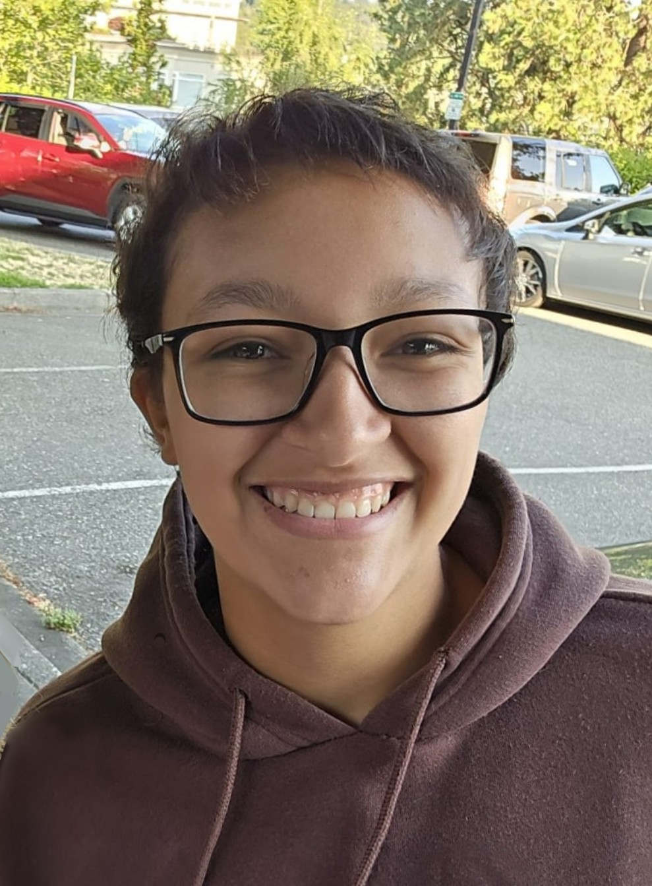

Work Experience

PeerRated
Full Stack Developer
Western Washington University
Teacher's Assistant
Full Stack Developer
September 2025 - Present
PeerRated
- Collaborated with a team of six to develop a full-stack review website using Agile/Scrum methodologies.
- Wrote backend design document by researching and choosing core database, API, and hosting technologies to optimize data storage and processing.
- Led design doc review of HLD documents to get feedback from team before implementation.
- Ensured effective communication with Project Lead and dev team during weekly standup meetings while identifying workstream dependencies and meeting project milestones during AGILE sprints.
Teacher's Assistant
July 2025 - Present
Western Washington University
- Assisted 30+ students with HTML5 and CSS3 course material and reinforced key software engineering concepts through guided lab sessions and individual support.
- Graded assignments in accordance with course rubrics while providing clear, actionable feedback to students.
Additional Experience
Western Washington University
Officer - Competitive Programming Club
Western Washington University
Member - Association for Computing Machinery
Juanita High School
Vice President - Women's Advocacy Club
Juanita High School
Member - Technology Student's Association